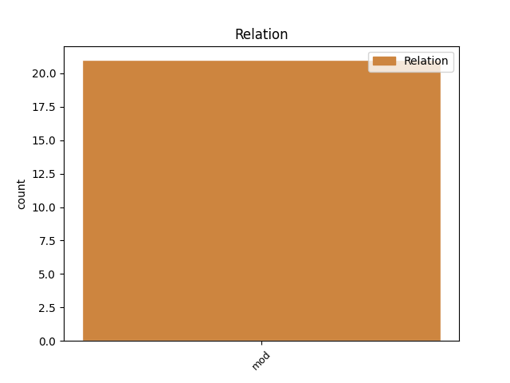
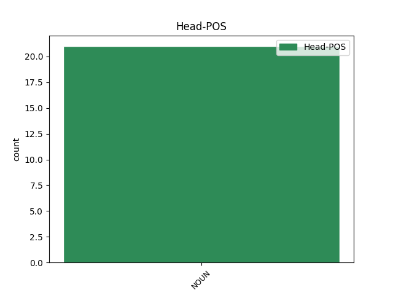
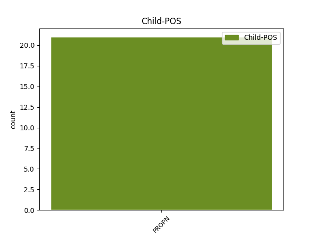

Distribution of features within this leaf



Agreement Rules sorted by frequency.
- When the dependent token is the modifer(mod) of the head token, and the head token is NOUN and the dependent token is PROPN.
1 Aangevuur _ _ _ _ 0 _ _ _
2 deur _ _ _ _ 0 _ _ _
3 die _ _ _ _ 0 _ _ _
4 begeerte _ _ _ _ 0 _ _ _
5 om _ _ _ _ 0 _ _ _
6 die _ _ _ _ 0 _ _ _
7 verbetering _ _ _ _ 0 _ _ _
8 van _ _ _ _ 0 _ _ _
9 die _ _ _ _ 0 _ _ _
10 lewensgehalte _ _ _ _ 0 _ _ _
11 van _ _ _ _ 0 _ _ _
12 alle _ _ _ _ 0 _ _ _
13 mense _ _ _ _ 0 _ _ _
14 aan _ _ _ _ 0 _ _ _
15 te _ _ _ _ 0 _ _ _
16 moedig _ _ _ _ 0 _ _ _
17 , _ _ _ _ 0 _ _ _
18 veral _ _ _ _ 0 _ _ _
19 in _ _ _ _ 0 _ _ _
20 die _ _ _ _ 0 _ _ _
21 ontwikkelende _ _ _ _ 0 _ _ _
22 lande _ _ _ _ 0 _ _ _
23 , _ _ _ _ 0 _ _ _
24 sal _ _ _ _ 0 _ _ _
25 ons _ _ _ _ 0 _ _ _
26 daarop _ _ _ _ 0 _ _ _
27 konsentreer _ _ _ _ 0 _ _ _
28 om _ _ _ _ 0 _ _ _
29 ons _ _ _ _ 0 _ _ _
30 deelname _ _ _ _ 0 _ _ _
31 uit _ _ _ _ 0 _ _ _
32 te _ _ _ _ 0 _ _ _
33 brei _ _ _ _ 0 _ _ _
34 in _ _ _ _ 0 _ _ _
35 die _ _ _ _ 0 _ _ _
36 Indië-Brasilië-Suid-Afrika-forums _ _ _ _ 0 _ _ _
37 , _ _ _ _ 0 _ _ _
38 die _ _ _ _ 0 _ _ _
39 nuwe _ _ _ _ 0 _ _ _
40 Afrika-Asië Afrika-Asië PROPN NEE Number=Sing 42 mod _ _
41 Strategiese _ _ _ _ 0 _ _ _
42 Vennootskap vennootskap NOUN NSE Number=Sing 0 _ _ _
43 , _ _ _ _ 0 _ _ _
44 die _ _ _ _ 0 _ _ _
45 Onverbonde _ _ _ _ 0 _ _ _
46 Beweging _ _ _ _ 0 _ _ _
47 , _ _ _ _ 0 _ _ _
48 die _ _ _ _ 0 _ _ _
49 Groep _ _ _ _ 0 _ _ _
50 van _ _ _ _ 0 _ _ _
51 77 _ _ _ _ 0 _ _ _
52 en _ _ _ _ 0 _ _ _
53 in _ _ _ _ 0 _ _ _
54 die _ _ _ _ 0 _ _ _
55 onderhandelings _ _ _ _ 0 _ _ _
56 om _ _ _ _ 0 _ _ _
57 die _ _ _ _ 0 _ _ _
58 Suider-Afrikaanse _ _ _ _ 0 _ _ _
59 Doeane-unie _ _ _ _ 0 _ _ _
60 (SACU)-Mercusor _ _ _ _ 0 _ _ _
61 handelsooreenkoms _ _ _ _ 0 _ _ _
62 af _ _ _ _ 0 _ _ _
63 te _ _ _ _ 0 _ _ _
64 handel _ _ _ _ 0 _ _ _
65 . _ _ _ _ 0 _ _ _
Disagree Examples:
1 Meer _ _ _ _ 0 _ _ _
2 nog _ _ _ _ 0 _ _ _
3 : _ _ _ _ 0 _ _ _
4 op _ _ _ _ 0 _ _ _
5 die _ _ _ _ 0 _ _ _
6 30ste _ _ _ _ 0 _ _ _
7 herdenking _ _ _ _ 0 _ _ _
8 van _ _ _ _ 0 _ _ _
9 die _ _ _ _ 0 _ _ _
10 verbod _ _ _ _ 0 _ _ _
11 op _ _ _ _ 0 _ _ _
12 die _ _ _ _ 0 _ _ _
13 publikasie _ _ _ _ 0 _ _ _
14 van _ _ _ _ 0 _ _ _
15 die _ _ _ _ 0 _ _ _
16 koerante koerant NOUN NSM Number=Plur 0 _ _ _
17 The The PROPN NEE Number=Sing 16 mod _ _
18 World _ _ _ _ 0 _ _ _
19 en _ _ _ _ 0 _ _ _
20 The _ _ _ _ 0 _ _ _
21 Weekend _ _ _ _ 0 _ _ _
22 World _ _ _ _ 0 _ _ _
23 is _ _ _ _ 0 _ _ _
24 dit _ _ _ _ 0 _ _ _
25 ons _ _ _ _ 0 _ _ _
26 plig _ _ _ _ 0 _ _ _
27 om _ _ _ _ 0 _ _ _
28 die _ _ _ _ 0 _ _ _
29 volgende _ _ _ _ 0 _ _ _
30 vraag _ _ _ _ 0 _ _ _
31 te _ _ _ _ 0 _ _ _
32 stel _ _ _ _ 0 _ _ _
33 : _ _ _ _ 0 _ _ _
34 Het _ _ _ _ 0 _ _ _
35 almal _ _ _ _ 0 _ _ _
36 van _ _ _ _ 0 _ _ _
37 ons _ _ _ _ 0 _ _ _
38 ons _ _ _ _ 0 _ _ _
39 verantwoordelikheid _ _ _ _ 0 _ _ _
40 vir _ _ _ _ 0 _ _ _
41 die _ _ _ _ 0 _ _ _
42 skep _ _ _ _ 0 _ _ _
43 van _ _ _ _ 0 _ _ _
44 sosiale _ _ _ _ 0 _ _ _
45 binding _ _ _ _ 0 _ _ _
46 , _ _ _ _ 0 _ _ _
47 die _ _ _ _ 0 _ _ _
48 bevordering _ _ _ _ 0 _ _ _
49 van _ _ _ _ 0 _ _ _
50 'n _ _ _ _ 0 _ _ _
51 gemeenskaplike _ _ _ _ 0 _ _ _
52 gevoel _ _ _ _ 0 _ _ _
53 dat _ _ _ _ 0 _ _ _
54 ons _ _ _ _ 0 _ _ _
55 tot _ _ _ _ 0 _ _ _
56 Suid-Afrika _ _ _ _ 0 _ _ _
57 behoort _ _ _ _ 0 _ _ _
58 , _ _ _ _ 0 _ _ _
59 en _ _ _ _ 0 _ _ _
60 die _ _ _ _ 0 _ _ _
61 versterking _ _ _ _ 0 _ _ _
62 van _ _ _ _ 0 _ _ _
63 die _ _ _ _ 0 _ _ _
64 gom _ _ _ _ 0 _ _ _
65 wat _ _ _ _ 0 _ _ _
66 ons _ _ _ _ 0 _ _ _
67 nasie _ _ _ _ 0 _ _ _
68 bymekaarhou _ _ _ _ 0 _ _ _
69 ten _ _ _ _ 0 _ _ _
70 volle _ _ _ _ 0 _ _ _
71 aanvaar _ _ _ _ 0 _ _ _
72 en _ _ _ _ 0 _ _ _
73 ons _ _ _ _ 0 _ _ _
74 eie _ _ _ _ 0 _ _ _
75 gemaak _ _ _ _ 0 _ _ _
76 ? _ _ _ _ 0 _ _ _
1 In _ _ _ _ 0 _ _ _
2 September _ _ _ _ 0 _ _ _
3 verlede _ _ _ _ 0 _ _ _
4 jaar _ _ _ _ 0 _ _ _
5 het _ _ _ _ 0 _ _ _
6 27% _ _ _ _ 0 _ _ _
7 van _ _ _ _ 0 _ _ _
8 alle _ _ _ _ 0 _ _ _
9 munisipaliteite _ _ _ _ 0 _ _ _
10 byvoorbeeld _ _ _ _ 0 _ _ _
11 nie _ _ _ _ 0 _ _ _
12 munisipale _ _ _ _ 0 _ _ _
13 bestuurders _ _ _ _ 0 _ _ _
14 gehad _ _ _ _ 0 _ _ _
15 nie _ _ _ _ 0 _ _ _
16 , _ _ _ _ 0 _ _ _
17 was _ _ _ _ 0 _ _ _
18 meer _ _ _ _ 0 _ _ _
19 as _ _ _ _ 0 _ _ _
20 50% _ _ _ _ 0 _ _ _
21 van _ _ _ _ 0 _ _ _
22 die _ _ _ _ 0 _ _ _
23 senior _ _ _ _ 0 _ _ _
24 bestuursposte _ _ _ _ 0 _ _ _
25 in _ _ _ _ 0 _ _ _
26 die _ _ _ _ 0 _ _ _
27 Noordwes _ _ _ _ 0 _ _ _
28 vakant _ _ _ _ 0 _ _ _
29 en _ _ _ _ 0 _ _ _
30 het _ _ _ _ 0 _ _ _
31 slegs _ _ _ _ 0 _ _ _
32 1% _ _ _ _ 0 _ _ _
33 van _ _ _ _ 0 _ _ _
34 alle _ _ _ _ 0 _ _ _
35 senior _ _ _ _ 0 _ _ _
36 bestuurders _ _ _ _ 0 _ _ _
37 in _ _ _ _ 0 _ _ _
38 Mpumalanga Mpumalanga PROPN NEE Number=Sing 39 mod _ _
39 sleutelprestasieooreenkomste sleutelprestasieooreenkoms NOUN NSM Number=Plur 0 _ _ _
40 gesluit _ _ _ _ 0 _ _ _
41 . _ _ _ _ 0 _ _ _
1 Ons _ _ _ _ 0 _ _ _
2 sal _ _ _ _ 0 _ _ _
3 ook _ _ _ _ 0 _ _ _
4 voortgaan _ _ _ _ 0 _ _ _
5 om _ _ _ _ 0 _ _ _
6 'n _ _ _ _ 0 _ _ _
7 bydrae _ _ _ _ 0 _ _ _
8 te _ _ _ _ 0 _ _ _
9 lewer _ _ _ _ 0 _ _ _
10 tot _ _ _ _ 0 _ _ _
11 die _ _ _ _ 0 _ _ _
12 verwesenliking _ _ _ _ 0 _ _ _
13 van _ _ _ _ 0 _ _ _
14 die _ _ _ _ 0 _ _ _
15 doelwitte _ _ _ _ 0 _ _ _
16 van _ _ _ _ 0 _ _ _
17 die _ _ _ _ 0 _ _ _
18 Kyoto-protokol _ _ _ _ 0 _ _ _
19 op _ _ _ _ 0 _ _ _
20 Klimaatsverandering _ _ _ _ 0 _ _ _
21 en _ _ _ _ 0 _ _ _
22 voortdurende _ _ _ _ 0 _ _ _
23 verbeterings _ _ _ _ 0 _ _ _
24 in _ _ _ _ 0 _ _ _
25 hierdie _ _ _ _ 0 _ _ _
26 opsig _ _ _ _ 0 _ _ _
27 , _ _ _ _ 0 _ _ _
28 en _ _ _ _ 0 _ _ _
29 om _ _ _ _ 0 _ _ _
30 meer _ _ _ _ 0 _ _ _
31 stukrag _ _ _ _ 0 _ _ _
32 te _ _ _ _ 0 _ _ _
33 verleen _ _ _ _ 0 _ _ _
34 aan _ _ _ _ 0 _ _ _
35 die _ _ _ _ 0 _ _ _
36 onderhandelings onderhandeling NOUN NSM Number=Plur 0 _ _ _
37 oor _ _ _ _ 0 _ _ _
38 die _ _ _ _ 0 _ _ _
39 Wêreldhandelsorganisasie _ _ _ _ 0 _ _ _
40 se _ _ _ _ 0 _ _ _
41 Doha Doha PROPN NEE Number=Sing 36 mod _ _
42 Ontwikkelingsrondte _ _ _ _ 0 _ _ _
43 . _ _ _ _ 0 _ _ _